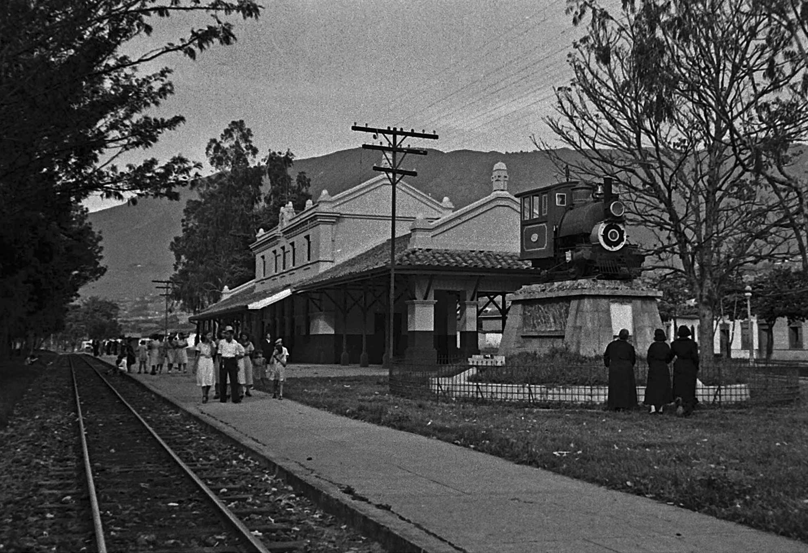

Primer informe de Investigación
El paso de los años, la innovación y tecnología han producido unos cambios sociales, económicos y una resignificación de trabajos, espacios y uso de materiales, sin embargo, junto a este “progreso” se hallan esos sentimientos que el “ciudadano progresista” suele ignorar: el olvido y la desaparición. Hablamos de trabajos y objetos que actualmente no tienen vigencia ni utilidad y menos se es posible observarlos; espacios que olvidados en el tiempo se han caído a pedazos o han sufrido un cambio para darle otra utilidad, ya sea de manera positiva en beneficio de la comunidad como fue el caso de la construcción del metro de Medellín, así como negativa estableciendo nuevas dinámicas dejando de lado lo propio de la comunidad.
Estos espacios no solo son característicos por sus fachadas, bases estructurales o belleza arquitectónica, tienen una gran importancia al ser testigos de las situaciones, dinámicas, historias y la significación que los locales tienen sobre esta, es esa parte intangible la que hace que aquellos lugares valgan la pena de preservar, son el patrimonio cultural intangible, que como lo define Dibam “es un conjunto determinado de bienes tangibles, intangibles y naturales que forman parte de prácticas sociales, a los que se les atribuyen valores a ser transmitidos, y luego resignificados (...)”. Esto es lo que nos atañe a una búsqueda de preservar estos espacios antes que desaparezcan; identificar estas zonas en riesgo nos lleva a lo propio, a nuestras raíces, a buscar ese primer lugar de identidad, la ciudad madre, Santa Fe de Antioquia. A continuación, daremos más detalles respecto a esta centenaria población en el aspecto histórico pues queremos estar en la misma página a la hora de hablar de esta población colonial.
Este estudio persigue los siguientes objetivos:
Santa Fé de Antioquia fue “fundada” en 1541 por el Mariscal Jorge Robledo, un militar español que llegaba de la Provincia de Popayán, quien en su afán por declarar estas tierras parte de la Corona Española, quiso poner la impronta colonial en su arquitectura, que aún se conserva intacta, gracias a los cuidados de su propia población.
Esta fundación se dio al fusionarse dos poblaciones, pues en primer lugar, la zona fue llamada Ciudad de Antioquía ubicada por el Valle de Ebéjico, cerca del actual municipio de Peque. Debido a las hostilidades de los indígenas fue trasladada por orden del capitán Juan Cabrera a la provincia de Nore, cerca de Frontino, el 7 de septiembre del año siguiente. Dos años después, en 1544, recibió el título de ciudad, y el escudo de armas le fue otorgado en 1545 por disposiciones reales del emperador Carlos V.
En 1546, Jorge Robledo funda otra población, se trata de la Villa de Santa Fe. Esta comenzó a decaer y Don Gaspar de Rodas, enviado de Belalcázar, la repobló y le dio la categoría de Villa en 1547. Este mismo año inició su vida parroquial. Más adelante, los vecinos de la ciudad de Antioquía, debido a las repetidas incursiones de los aborígenes se trasladaron a la Villa de Santa Fé. Es así como la villa y la ciudad se fusionaron, por lo que desde 1576, la zona comenzó a llamarse Ciudad de Santa Fé de Antioquia.
El 30 de octubre de 1584, el rey de España Don Felipe II, por real cédula dada en el Palacio del Prado, instituyó la villa de Santa fe de Antioquía en capital de la Provincia de Antioquía, título que conservó hasta 1826. El congreso de la República de Colombia le concedió el título de Monumento Nacional en 1960.
Hasta la mitad del siglo XVI, Santa Fé ha sido construida con casas de bahareque y pajas de iraca. En las dos últimas décadas del siglo, gracias a la ausencia de presión indígena y disponibilidad de campos para ganados y cultivos, la ciudad comenzó una etapa de desarrollo donde se consolidó su plaza central, la cual sería el actual centro histórico de Santa Fé, y donde también se alzarían construcciones de tapia pisada, antisísmicas, con patio central y de amplia magnitud, adornados con artículos de lujo traídos de Europa.
Aproximadamente a inicios del siglo XVII, la ciudad entró en un estado de decadencia, debido a la guerra hispano-indígena y en parte a la crisis minera en Buriticá haciendo que varios mineros y sus esclavos fueran a buscar oportunidades a otras zonas del Valle de Aburrá. Esto causó que la frontera minera se expandiera y que llevará al surgimiento de sitios importantes como Aná (actual Medellín) y Rionegro. Esto incitó a las autoridades coloniales de realizar expediciones militares contra los indígenas chocoes para tener acceso a zonas con reservas de oro, buscando el “Dadaybe” (versión chocoana de El Dorado).
A partir de los sucesos del Grito de Independencia en 1810, se instaló la primera Asamblea Constituyente en la ciudad al año siguiente. En esta época, las familias residentes en la ciudad estaban o apoyando a los reales o a los libertarios. Esto llegaría a su fin cuando José María Córdoba lideraría a sus tropas a la victoria en la batalla de Chorros Blancos cerca de Yarumal. Esto detuvo los avances de los españoles y acabaron con el dominio real en Antioquia.
Luego de que en 1826 se otorgará el título de ciudad capital de Santa Fe a Medellín, la mayoría de familias con poder que residían en la Ciudad Madre se trasladaron a la nueva capital, atraídos por la promesa del desarrollo de esta.
Justo antes de que los españoles llegaran, la zona que hoy es Santa Fe de Antioquia tenía grupos indígenas viviendo allí, cada uno con sus propias costumbres y creencias. La colonización española cambió muchísimo la cultura de este lugar, lo que resultó en la edificación de templos, plazas y viviendas con ese estilo colonial que todavía podemos ver hoy en día. Por muchos años, Santa Fé de Antioquia fue un núcleo social y religioso clave, afectando sus costumbres, fiestas y la forma en que se construían las cosas. Eventos como la Semana Santa y otras festividades cristianas muestran esta herencia, notándose mucho la influencia de la Iglesia y las prácticas traídas desde España. También, tanto la arquitectura como el conocimiento local, por ejemplo, el trabajo de orfebrería en filigrana, han pasado de padres a hijos, por eso hoy este municipio es famoso como un Pueblo Patrimonio de Colombia, resaltando su gran aporte histórico y cultural para el país.
Tras el traslado de la capital del departamento a Medellín en 1826, Santa Fé entró en un periodo de aislamiento, el cual ayudó a la preservación de sus estructuras tradicionales y su identidad, llevándola así a ser reconocida como Monumento Nacional desde 1960.
La cultura santafereña, demuestra ser dinámica adaptando sus tradiciones antiguas a las nuevas generaciones, ejemplo de esto es la Fiesta de los Diablitos celebrada la última semana de diciembre desde hace más de 375 años, fiesta la cual empezó siendo un día absuelto para los esclavos en la colonia, a convertirse en una festividad que puede llegar a representar una especie de sátira social y resistencia cultural, los participantes utilizan máscaras que parodian los rostros de antiguos colonos, manteniendo así viva la memoria cultural y étnica que forjó el territorio.
A finales del siglo XX Santa fe diversificar su oferta cultural dando inicio al Festival de Cine y Video que el pasado 2025 llevó a cabo su 26° edición, este festival transforma el espacio público, convirtiendo plazas y calles en pantallas de cine bajo las estrellas, proponiendo así un espacio de diálogo, experiencia colectiva y proporcionando un acceso a la cultura y nuevas perspectivas.
La mejora de la conectividad ha puesto a Santa Fe a tan solo una hora de Medellín, generando turismo pero transformando así su paisaje cultural para crear uno más "artificial" para el turismo transformando consigo casas y lugares tradicionales por lugares para el turista, representado así un reto por la conservación de la cultura y espacios de la "Ciudad Madre" de Colombia.
El servicio comercial de la línea férrea de Antioquia cesó sus actividades entre los años sesenta y ochenta. Esto se debió a que ya no era rentable, tenía gastos operativos muy altos, le faltó apoyo financiero y el transporte por carretera se hizo muy popular, quitándole poco a poco el papel principal al tren para mover mercancías y personas. Cuando estaba en marcha, este tren era clave para que la zona creciera económica y socialmente, pues ayudaba al intercambio comercial, a la gente moverse y a unir varios pueblos del departamento.
Tras su abandono, la infraestructura sufrió de deterioro, reflejando el declive del sistema ferroviario en Antioquia. Sin embargo, años después fue restaurado y recuperado como parte de patrimonio histórico, y actualmente funciona como sede de la Fundación Ferrocarril de Antioquia. Hoy se le ve como algo importante para la cultura de Antioquia, ya que marca una época crucial en la historia del transporte y el avance de la región. A pesar de su valor pasado, últimamente ha sufrido destrozos por culpa de vándalos, lo que muestra que hace falta mejorar cómo se cuida y protege esta parte de nuestra historia común.

Siendo el primer parque de Bogotá, inaugurado en 1883 y construido como forma de conmemorar el nacimiento de Simón Bolívar, fue uno de los parques más emblemáticos y con gran peso histórico. Era un lugar de congregación social, donde se realizaban celebraciones, bandas recitaban su música y era un lugar de esparcimiento para familias y amigos. Fue perdiendo popularidad con el paso de los años, debido a los otros parques que se construían y a la falta de modernización de este, por no tener caminos en cementos, alegando muchos que tenía mucho polvo y en días de lluvía era imposible de caminar. Por tanto, durante unas cuantas décadas contó con varias reformas, actualizando su arquitectura y aspecto a la moda en tendencia, fue locación de varias esculturas como de poetas importantes, el templete de Bolívar y La Rebecca.
Finalmente, por planeaciones en la modernización de Bogotá y el mejoramiento de vías, en 1958 gran parte del parque fue demolido para dar paso a la avenida 26, muchas de las estatuas fueron reubicadas, incluso la templete de bolívar, siendo gran ícono del parque trasladandola a el parque de los periodistas. Al día de hoy, la extensión del parque es muy mínima, ya no cuenta con los jardines y plantas que antes, es muy desolado y solo el estanque y La Rebecca que aún continua son las prueba de lo que alguna vez fue el parque.
Este parque fue importante durante muchos años para la comunidad bogotana de la época, para sus encuentros e intercambios de conversaciones, así como para visibilizar a grupos musicales y sembrar un lugar armónico, vio crecer a muchos ciudadanos y significó en estos un lugar de descanso en una Bogotá que estaba en constante desarrollo. No obstante, el paso de los años y el descuido disminuyó su popularidad, en contraparte con la ciudad madre Santafé de Antioquia aún se ven sus parques originales cuidados e incluso, algunos renovados, que claro, con el tiempo se ven modificados en dinámicas, como fue el parque principal que pasó de ser el sitio predilecto para que los locales vendieran y compraran mercado a algo similar a lo que en inicio fue el Parque Centenario, un lugar para el descanso. Ahora, nos entra la cuestión: ¿esa modificación mantiene la esencia del parque? y si ese pensamiento de, un simple lugar para el peatón, desplazando lo que lo hacía destacar no lo hará sufrir el mismo destino del Parque Centenario.
La ciudad madre ha tenido un recorrido histórico a través de los años, un escenario colonial que se ha visto transformado, resignificado o deteriorado. Destacándose por una arquitectura colonial propia de la españolización, Santa Fé de Antioquia representa una identidad, no solo caracterizada de manera material en sus espacios físicos sino en las dinámicas sociales que dentro de estos mismos se daban, dándole vida a estos espacios.
Espacios dedicados a una dinámica económica como lo fueron los toldos del Mercado Sopetranero, anteriormente dispuesto en el parque principal, fue el lugar predilecto para la venta de artesanías y frutas, debido a decisiones gubernamentales, en las que se alega un uso indebido del espacio público y desorganización, como lo escribe Álvarez en El Colombiano (2018) y una búsqueda de dar prioridad al peatón el parque principal fue remodelado desplazando los toldos a un nuevo parque construido en la plaza de mercado como lo indica Hora 13 noticias. Denota un cambio en lo que inició como un mercado del pueblo, a que la llegada con el tiempo de los turistas y falta de respeto por lo propio fuera un detonante de la decisión de recuperación de espacios, pero ahí entra la cuestión, de si la reubicación de aquellos toldos terminan como una búsqueda de mejora intentando conservar parte de lo histórico como lo hicieron con el parque o se empieza a romper y perder algo parte de la historia.
Como toda ciudad es normal que con el tiempo se empiece a pensar en una mejor planeación urbana, llevando a casos como la reubicación de los toldos, pero algo que a veces pasa desapercibido y está justo al lado de la Catedral Metropolitana De La Inmaculada Concepción del parque principal es La Casa Verde, casa colonial en el olvido solo una fachada que esconde historia y que desde hace algunos años con mayor preocupación en 2018 estaba a nada de caerse a pedazos.
Esta casa que fue construida hace más de 200 años es una clara demostración de la arquitectura colonial, siendo una casa con una dinámica normal de hogar fue de los hijos de Juan del Corral, testigo del nacimiento de Roberto Botero y Juan del Corral durante un tiempo lugar de hospedaje de la Madre Laura, como menciona Herrera en elColombiano (2018). Tuvo varios puntos en la historia de resignificación, pasando a ser el lugar “donde funcionó una compañía financiera que administró los recursos con los que se construyó el puente colgante de Occidente” (El Santafereño, 2020). Incluso durante algunos años funcionó la emisora de Ondas del Tonusco, fue hotel y centro de comercio. En 2024 se evidenciaban en su primer piso algunos locales comerciales.
La falta de mantenimiento durante muchos años debilitó la estructura, llegando a punto de encontrarse con gran parte de sus recubrimientos dañados, vigas y tablas caídas, y tapia destrozada. Actualmente, no es posible encontrar con claridad el estado interior de la estructura, desde 2018 no hay reportes oficiales sobre lo hecho en la casa, sobre si las reparaciones alguna vez llegaron o la casa verde sigue a merced del paso de los años.
Un lugar lleno de historia, instrumentos de época, donde personajes históricos y reconocidos estuvieron y donde fue encontrado un libro de la madre laura, esta casa abandonada entre años, en un debate legal sin un propietario definido hasta el año de 2018, genera una incertidumbre de las historias que contuvo durante el tiempo, si representa algo mucho más de la placa que enmarca las eminencias que nacieron ahí o si tras una fachada pintada cada tanto, buscando algo bonito e impoluto, en un lugar hecho trozos los habitantes de Santa Fe de Antioquia vieron su historia reflejada o lo sintieron algo propio.
La Casa de las Dos Palmas, ubicada en la vereda El Espinal a pocos kilómetros del casco urbano de Santa Fé de Antioquia, es mucho más que una antigua construcción colonial: es un testimonio vivo de la historia antioqueña. Levantada en 1613 y asociada a la figura de Juan del Corral —quien proclamó la Independencia de Antioquia en 1813—, esta residencia encarna siglos de memoria política, social y arquitectónica del territorio. Su estructura, típica de la arquitectura rural colonial, refleja las formas de habitar y organizar la vida en la región durante la Colonia y la temprana República, convirtiéndola en un referente patrimonial que dialoga directamente con el carácter histórico de Santa Fe de Antioquia, reconocido a nivel nacional por la conservación de su legado arquitectónico.
Décadas más tarde, la casa adquirió una nueva dimensión cultural al servir como escenario principal de la telenovela La Casa de las Dos Palmas, inspirada en la novela de Manuel Mejía Vallejo, lo que la transformó en un símbolo de la memoria audiovisual y literaria del país. Este doble valor —histórico y cultural— hace que su conservación sea especialmente relevante. Sin embargo, el incendio ocurrido en 2019 deterioró gravemente su estructura, destruyendo techos y enseres y evidenciando la fragilidad del patrimonio cuando no cuenta con protección y restauración adecuadas. Aun así, la casa sigue representando un espacio de memoria colectiva cuya preservación permitiría mantener viva una parte esencial de la historia antioqueña para las futuras generaciones.
Conservar la Casa de las Dos Palmas es fundamental porque su valor trasciende lo material: representa un punto de encuentro entre la historia, la cultura y la identidad de la región. Preservarla permitiría proteger un testimonio arquitectónico del periodo colonial, fortalecer la memoria colectiva asociada a hechos históricos y manifestaciones artísticas, y ofrecer un recurso pedagógico vivo para estudiantes, investigadores y visitantes. Además, su restauración aportaría al turismo cultural de Santa Fe de Antioquia, dinamizando la economía local y reforzando el carácter patrimonial del municipio. Cuidar esta casa es, en esencia, salvaguardar una parte irremplazable del legado antioqueño para que las futuras generaciones puedan conocerlo, comprenderlo y valorarlo.
La Casa Negra en Santa Fé de Antioquia es una histórica edificación colonial del siglo XVII, reconocida por su arquitectura de ladrillo y piedra en el centro histórico. Funciona actualmente como sede de la Cámara de Comercio, la Casa de la Cultura Julio Vives Guerra y el Archivo Histórico, siendo un destacado patrimonio cultural y cuna de la cultura paisa. SU fachada, estilo colonial, conserva elementos originales que reflejan la tradicion constructiva de la época, como balcones de madera tallada, patios interiores amplios y muros gruesos que han resistido el paso del tiempo.
La "Casa Negra" en Santa Fé de Antioquia, identificada en reportes de 2020 como una de las edificaciones patrimoniales afectadas por vendavales y lluvias intensas, forma parte de una lista de estructuras con daños estructurales en el municipio. Se requiere precaución ante el riesgo de caída de materiales debido a la inestabilidad de terrenos por condiciones climáticas, reportándose incidentes cercanos en veredas como La Cordillera. A pesar de ello, la comunidad y las autoridades locales han manifestado interés en su conversación, reconociendo su valor simbólico y su importancia dentro del paisaje histórico urbano.
Este espacio también funciona como promotor de actividades culturales como talleres, lecturas, exposiciones y encuentros comunitarios, conservando la memoria histórica y artística de la región. Es un lugar emblemático que genera una conexión entre el pasado colonial de Santa Fe con la vida cultural contemporánea, convirtiéndose en un punto de interés para los turistas, investigadores y artistas locales. Además de ser reconocido como el hogar del poeta Julio Vives Guerra quien representa la nostalgia, la tradición literaria y la identidad cultural de Santa Fé de Antioquia, gracias a sus obras describiendo lo mucho que apreciaba su lugar de origen y su fuerte conexión con este, a pesar de mantenerse casi siempre por fuera de su hogar. En este sentido la Casa Negra no solo conserva una herencia arquitectónica invaluable, sino que también actúa como un símbolo vivo de la historia y la memoria.
El Puente de Occidente es un emblemático puente colgante de 291 metros que cruza el río Cauca, conectando los municipios de Santa Fe de Antioquia y Olaya. Construido entre 1887 y 1895 por el ingeniero José María Villa, fue en su época uno de los más largos del mundo y un hito de la ingeniería.
El Puente de Occidente en Santa Fe de Antioquia enfrenta una situación crítica de deterioro estructural (cerchas de madera y elementos metálicos), lo que ha llevado a cierres intermitentes y restricciones severas desde 2023. Aunque se han realizado labores de mantenimiento, la estructura presenta alto riesgo, limitando el paso a vehículos livianos, motos y peatones, impactando la conectividad con Olaya, Liborina y Sabanalarga.
La construcción del puente de Occidente tardó siete años entre 1888 y 1895. En la orilla oriental en el llamado ponteadero se llegaron a reunir 400 trabajadores. En un paraje cercano se construyó un tejar con los hornos para la fabricación de los ladrillos. Desde el primer día, los muros blanqueados de la cantina empezaron a llenarse de bosquejos y ecuaciones, al igual que las tablas del comedor común. Estos dos sitios fueron utilizados por el ingeniero para dar explicaciones a sus oficiales y obreros, y resolver dudas sobre detalles de la construcción.
La no-existencia de planos y cálculos previos a la construcción del puente de Occidente es uno de los mitos que se ha mantenido por años. Todavía los guías actuales le dicen a los turistas: «que hizo los planos con una varita sobre la arena de la playa del río y que se los llevó una creciente» o «que cuando le preguntaron los representantes del gobierno dónde estaban los planos, el señalaba su frente con el índice».
Desde mi experiencia personal, he tenido la oportunidad de visitar esta majestuosa obra arquitectónica, y es imposible no percibir el peso de la historia que habita en sus muros. Aunque su función original ha sido desplazada por la modernidad y por obras cada vez más ambiciosas, su presencia permanece firme, como un testigo silencioso del paso del tiempo.
Hoy en día se conserva para el disfrute de turistas y para el uso ocasional de los habitantes locales. Sin embargo, más allá de su nueva función, resulta hermoso recordar este monumento nacional como un hito del progreso, una construcción que en su momento transformó la vida cotidiana de miles de personas. Entre sus espacios se entrelazan cientos de historias: algunas quedaron en el pasado y otras continúan escribiéndose en este lugar tan lleno de memoria y belleza.
El nombre Guasabra al parecer proviene de un cacique que habitaba la región que se llamaba Guasabrá. Inicialmente fue poblado por indígenas. A mediados del siglo XIX, llegaron oleadas de nuevos pobladores procedentes del norte de Antioquia, más exactamente de lo que hoy son los municipios de San Pedro de los Milagros, Entrerríos, Santa Rosa de Osos y San José de la Montaña. Pero igualmente llegaron familias de algunos municipios del Occidente y Suroeste antioqueño.
Desde los inicios de Guasabra, ya era considerada una aldea. El incremento de la población y la actividad económica, motivaron la declaración de corregimiento en el año de 1917. Guasabra fue un corregimiento próspero que jugó un papel importante en la vida de los campesinos de las veredas colindantes y de varios municipios cercanos. Su mayor auge comercial y agrícola se dio en la época que fue paso obligado para los municipios de Caicedo y Urrao. A partir de la guerra bipartidista de los años 50 hubo muchos desplazamientos hacia otras zonas del departamento y del país debido a la violencia; posteriormente, hacia finales de los años 90 hubo más desplazamientos por el recrudecimiento del conflicto armado.
El centro poblado de Guasabra fue construido sobre una falla geológica que ha amenazado la estabilidad de las construcciones, y en consecuencia, casi todas las viviendas fueron destruidas por este fenómeno natural. Debido a esta circunstancia, el poblado fue trasladado a la vereda Laureles donde se construyó un nuevo templo. A pesar del hundimiento del pueblo, el templo ha permanecido en pie. El 22 de agosto de 2008 se sancionó el Acuerdo N° 010 del Concejo Municipal de Santa Fe de Antioquia, por el cual se declaró el templo Patrimonio Cultural Municipal.
Se da el aviso de lo especulativo que puede llegar a ser este punto, ya que la información sobre zonas de este calibre en la localidad de Santafé no es algo que simplemente pueda ser buscado en la web, puede ser por discreción o desinterés, llano desinterés. Esto es lo que se busca responder con la salida pedagógica hacia el viejo pueblo antioqueño.
Las zonas de tolerancia son un factor común entre comunidades, esas zonas que permiten el descontrol y degenere de la población. Esos barrios que, con frecuencia, se ganan el lugar de ser los más peligrosos de la localidad en la que se encuentren, casos como: El barrio de Santafé en Bogotá, El Callejón en Cúcuta, La cuarta en Bucaramanga; cada uno de estos siendo la oveja negra en un macrocosmos citadino buscando una supuesta tranquilidad, ignorando -o como su nombre indica, tolerando- estos espacios.
Estos sitios, son particularmente vistos por encima, como con una vergüenza del que no pertenece. Y, honestamente, no se puede culpar a los ciudadanos que no tienen más que echar la mirada hacia otro lado, pues más allá de ser hogar de putas, se suele también encontrar la raíz de todo encarnizamiento religioso: Las drogas.
Bandas criminales suelen acompañar estas zonas aprovechando ya la primera tolerancia y respeto hacia la, aparentemente inofensiva, prostitución. Como en Bucaramanga se vivió allá en los 80, según Kilô (2025) “Las bandas se adueñaron de los alrededores, disputándose el control del territorio para la venta de marihuana, cocaína y basuco”. Esto es tan normal que no sorprende que estos datos sean nombrados, pues es sencillo intuir lo que en estos espacios ocurre simplemente por el nombre.
Ahora, uno podría pensar, “¿Qué podría traer de bueno preservar estos lugares?” y es que en este caso no se puede negar el impacto negativo que tienen estos sitios en la comunidad general, no tiene sentido mantenerlos a flote, darles visibilidad y que se vuelvan tan insignia de Santafé como lo podría ser el Parque Lleras para Medellín. Sin embargo, el enfoque que queremos tener más en cuenta es en la memoria, hurgar en esos espacios de “recreación sexual”, observar cuáles eran los más populares, su historia y evolución en el lugar, preguntar si tuvo impacto en la comunidad, y si sí cómo podrían describir ese impacto. Poder charlar con alguna puta para preguntar sobre su forma de trabajar, sus condiciones laborales, historias varias e incluso ver si nos encontramos como alguna figura tal como fue Marta Pintuco. Tal vez, encontrarnos con un caso parecido al barrio homónimo de Bogotá, sitio donde se ve el caso de Las maricas de Santa Fé, una casa vieja en pleno barrio donde más de treinta personas comparten vivienda, entre ellos, prostitutas, tinteros, vendedores ambulantes y transexuales que aunque, con alguna dificultad, lograr formar una gran comunidad de apoyo mutuo, ya sea con actos, como ver películas juntas o fumarse un porro después de un duro día de trabajo. Espacios de este estilo sufren de una desmerecida fragilidad, siendo lo que merecen es algo como hizo el fotógrafo Nick Jaussi, que como proyecto personal, les dio el foco y reconocimiento que se merecen, pues son estas imágenes humanizantes las que fomentan ver a las personas que no solemos ver en nuestra cotidianidad como lo que son, seres humanos.
Eso se quiere hacer, especialmente, mostrar qué las prostitutas, muchas veces echadas también la culpa de la situación de los barrios, son también víctimas de sus condiciones y que, a pesar de su oficio, no se puede perder el carácter humanizante de estas mismas. Queremos preservar ese espacio de personas que se pierde día a día al no dejarles hacer uso de su propia voz. Finalmente, se quiere poder darle nombre a esa zona que pueda cumplir con las características de una zona de tolerancia en el pueblo de Santafé de Antioquia, poder escuchar a la población aledaña a la zona, a los vecinos, a los vendedores ambulantes, a las prostitutas, escuchar lo que tienen para decir y reflexionar cómo poder darle un puente a su voz por medio de este proyecto.
Hay que dejar en claro que las parejas clandestinas, entendidas como aquellas uniones amorosas que debían mantenerse en secreto por razones sociales, religiosas o familiares, representan un aspecto importante aunque poco documentado, dentro de la historia cultural de muchas comunidades. Estas relaciones se desarrollaban a escondidas debido al miedo por el castigo moral o represalias. En algunos casos, se trataba de amores prohibidos por diferencia en las clases sociales, razas o religión; en otros, de vínculos extramatrimoniales de la época.
En el caso de Santa Fe de Antioquia, no existen registros exactos ni fuentes específicas que mencionan con claridad zonas o espacios en los que estas parejas se reunieron o consumaron su relación de manera clandestina. Esto se debe en gran parte por la gran discreción que manejaban las parejas, además como no eran acontecimientos “relevantes” es complicado conseguir información dentro de fuentes oficiales. Por eso a través de esta investigación se busca indagar con mayor profundidad sobre la existencia de estas prácticas en la localidad, escuchando los relatos orales, los rumores o testigos que puedan conservar los habitantes más antiguos del lugar. Históricamente, las parejas clandestinas no eran una rareza. Durante la época colonial, por ejemplo, la conexión entre personas de distintas castas sociales o raciales eran un motivo de alboroto y debían de mantenerse en discreción para evitar sanciones o la pérdida del estatus social. En varios lugares de Antioquia se llegó a rumorear sobre encuentros a escondidas entre hijos de familias conocidas y mujeres o hombres de origen humilde, relatos que con el tiempo, se transformaron en el imaginario local. Incluso han llegado casos de parejas que se casaron en secreto desafiando las normas impuestas por sus familias.
Por esto, la investigación no busca únicamente confirmar la existencia de estas parejas, sino comprender lo que de verdad puede llegar a significar representar esto dentro de la vida social y emocional de las personas de Santa Fé.
MUCHOOOOS LINKS QUE TOCA AGREGAR